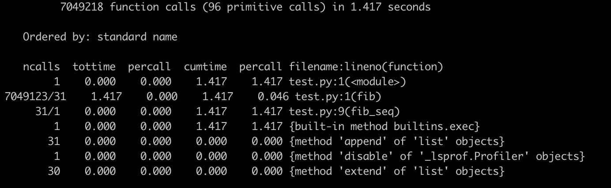
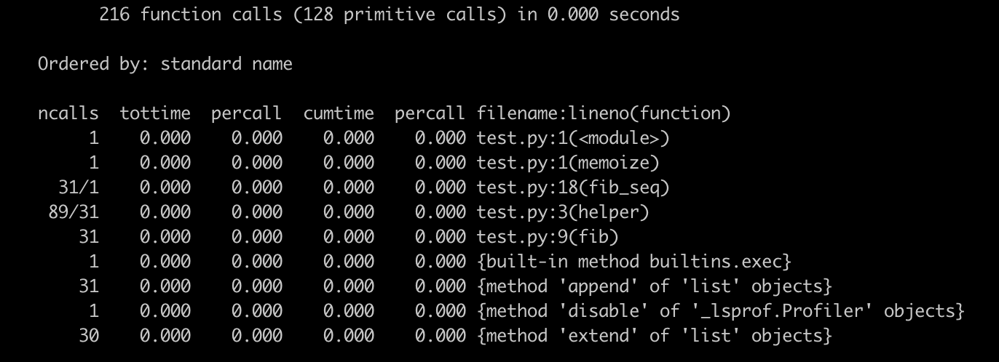

- 00 开篇词 从工程的角度深入理解Python.md.html
- 01 如何逐步突破，成为Python高手？.md.html
- 02 Jupyter Notebook为什么是现代Python的必学技术？.md.html
- 03 列表和元组，到底用哪一个？.md.html
- 04 字典、集合，你真的了解吗？.md.html
- 05 深入浅出字符串.md.html
- 06 Python “黑箱”：输入与输出.md.html
- 07 修炼基本功：条件与循环.md.html
- 08 异常处理：如何提高程序的稳定性？.md.html
- 09 不可或缺的自定义函数.md.html
- 10 简约不简单的匿名函数.md.html
- 11 面向对象（上）：从生活中的类比说起.md.html
- 12 面向对象（下）：如何实现一个搜索引擎？.md.html
- 13 搭建积木：Python 模块化.md.html
- 14 答疑（一）：列表和元组的内部实现是怎样的？.md.html
- 15 Python对象的比较、拷贝.md.html
- 16 值传递，引用传递or其他，Python里参数是如何传递的？.md.html
- 17 强大的装饰器.md.html
- 18 metaclass，是潘多拉魔盒还是阿拉丁神灯？.md.html
- 19 深入理解迭代器和生成器.md.html
- 20 揭秘 Python 协程.md.html
- 21 Python并发编程之Futures.md.html
- 22 并发编程之Asyncio.md.html
- 23 你真的懂Python GIL（全局解释器锁）吗？.md.html
- 24 带你解析 Python 垃圾回收机制.md.html
- 25 答疑（二）：GIL与多线程是什么关系呢？.md.html
- 26 活都来不及干了，还有空注意代码风格？！.md.html
- 27 学会合理分解代码，提高代码可读性.md.html
- 28 如何合理利用assert？.md.html
- 29 巧用上下文管理器和With语句精简代码.md.html
- 30 真的有必要写单元测试吗？.md.html
- 31 pdb & cProfile：调试和性能分析的法宝.md.html
- 32 答疑（三）：如何选择合适的异常处理方式？.md.html
- 33 带你初探量化世界.md.html
- 34 RESTful & Socket：搭建交易执行层核心.md.html
- 35 RESTful & Socket：行情数据对接和抓取.md.html
- 36 Pandas & Numpy：策略与回测系统.md.html
- 37 Kafka & ZMQ：自动化交易流水线.md.html
- 38 MySQL：日志和数据存储系统.md.html
- 39 Django：搭建监控平台.md.html
- 40 总结：Python中的数据结构与算法全景.md.html
- 41 硅谷一线互联网公司的工作体验.md.html
- 42 细数技术研发的注意事项.md.html
- 43 Q&A：聊一聊职业发展和选择.md.html
- 加餐 带你上手SWIG：一份清晰好用的SWIG编程实践指南.md.html
- 结束语 技术之外的几点成长建议.md.html
- 捐赠
31 pdb & cProfile：调试和性能分析的法宝
你好，我是景霄。
在实际生产环境中，对代码进行调试和性能分析，是一个永远都逃不开的话题。调试和性能分析的主要场景，通常有这么三个：
- 一是代码本身有问题，需要我们找到root cause并修复；
- 二是代码效率有问题，比如过度浪费资源，增加latency，因此需要我们debug；
- 三是在开发新的feature时，一般都需要测试。
在遇到这些场景时，究竟应该使用哪些工具，如何正确的使用这些工具，应该遵循什么样的步骤等等，就是这节课我们要讨论的话题。
用pdb进行代码调试
pdb的必要性
首先，我们来看代码的调试。也许不少人会有疑问：代码调试？说白了不就是在程序中使用print()语句吗？
没错，在程序中相应的地方打印，的确是调试程序的一个常用手段，但这只适用于小型程序。因为你每次都得重新运行整个程序，或是一个完整的功能模块，才能看到打印出来的变量值。如果程序不大，每次运行都非常快，那么使用print()，的确是很方便的。
但是，如果我们面对的是大型程序，运行一次的调试成本很高。特别是对于一些tricky的例子来说，它们通常需要反复运行调试、追溯上下文代码，才能找到错误根源。这种情况下，仅仅依赖打印的效率自然就很低了。
我们可以想象下面这个场景。比如你最常使用的极客时间App，最近出现了一个bug，部分用户无法登陆。于是，后端工程师们开始debug。
他们怀疑错误的代码逻辑在某几个函数中，如果使用print()语句debug，很可能出现的场景是，工程师们在他们认为的10个最可能出现bug的地方，都使用print()语句，然后运行整个功能块代码（从启动到运行花了5min），看打印出来的结果值，是不是和预期相符。
如果结果值和预期相符，并能直接找到错误根源，显然是最好的。但实际情况往往是，
- 要么与预期并不相符，需要重复以上步骤，继续debug；
- 要么虽说与预期相符，但前面的操作只是缩小了错误代码的范围，所以仍得继续添加print()语句，再一次运行相应的代码模块（又要5min），进行debug。
你可以看到，这样的效率就很低下了。哪怕只是遇到稍微复杂一点的case，两、三个工程师一下午的时间可能就没了。
可能又有人会说，现在很多的IDE不都有内置的debug工具吗？
这话说的也没错。比如我们常用的Pycharm，可以很方便地在程序中设置断点。这样程序只要运行到断点处，便会自动停下，你就可以轻松查看环境中各个变量的值，并且可以执行相应的语句，大大提高了调试的效率。
看到这里，你不禁会问，既然问题都解决了，那为什么还要学习pdb呢？其实在很多大公司，产品的创造与迭代，往往需要很多编程语言的支持；并且，公司内部也会开发很多自己的接口，尝试把尽可能多的语言给结合起来。
这就使得，很多情况下，单一语言的IDE，对混合代码并不支持UI形式的断点调试功能，或是只对某些功能模块支持。另外，考虑到不少代码已经挪到了类似Jupyter的Notebook中，往往就要求开发者使用命令行的形式，来对代码进行调试。
而Python的pdb，正是其自带的一个调试库。它为Python程序提供了交互式的源代码调试功能，是命令行版本的IDE断点调试器，完美地解决了我们刚刚讨论的这个问题。
如何使用pdb
了解了pdb的重要性与必要性后，接下来，我们就一起来看看，pdb在Python中到底应该如何使用。
首先，要启动pdb调试，我们只需要在程序中，加入“import pdb”和“pdb.set_trace()”这两行代码就行了，比如下面这个简单的例子：
a = 1
b = 2
import pdb
pdb.set_trace()
c = 3
print(a + b + c)
当我们运行这个程序时时，它的输出界面是下面这样的，表示程序已经运行到了“pdb.set_trace()”这行，并且暂停了下来，等待用户输入。
> /Users/jingxiao/test.py(5)<module>()
-> c = 3
这时，我们就可以执行，在IDE断点调试器中可以执行的一切操作，比如打印，语法是"p <expression>"：
(pdb) p a
1
(pdb) p b
2
你可以看到，我打印的是a和b的值，分别为1和2，与预期相符。为什么不打印c呢？显然，打印c会抛出异常，因为程序目前只运行了前面几行，此时的变量c还没有被定义：
(pdb) p c
*** NameError: name 'c' is not defined
除了打印，常见的操作还有“n”，表示继续执行代码到下一行，用法如下：
(pdb) n
-> print(a + b + c)
而命令”l“，则表示列举出当前代码行上下的11行源代码，方便开发者熟悉当前断点周围的代码状态：
(pdb) l
1 a = 1
2 b = 2
3 import pdb
4 pdb.set_trace()
5 -> c = 3
6 print(a + b + c)
命令“s“，就是 step into 的意思，即进入相对应的代码内部。这时，命令行中会显示”--Call--“的字样，当你执行完内部的代码块后，命令行中则会出现”--Return--“的字样。
我们来看下面这个例子：
def func():
print('enter func()')
a = 1
b = 2
import pdb
pdb.set_trace()
func()
c = 3
print(a + b + c)
# pdb
> /Users/jingxiao/test.py(9)<module>()
-> func()
(pdb) s
--Call--
> /Users/jingxiao/test.py(1)func()
-> def func():
(Pdb) l
1 -> def func():
2 print('enter func()')
3
4
5 a = 1
6 b = 2
7 import pdb
8 pdb.set_trace()
9 func()
10 c = 3
11 print(a + b + c)
(Pdb) n
> /Users/jingxiao/test.py(2)func()
-> print('enter func()')
(Pdb) n
enter func()
--Return--
> /Users/jingxiao/test.py(2)func()->None
-> print('enter func()')
(Pdb) n
> /Users/jingxiao/test.py(10)<module>()
-> c = 3
这里，我们使用命令”s“进入了函数func()的内部，显示”--Call--“；而当我们执行完函数func()内部语句并跳出后，显示”--Return--“。
另外，
- 与之相对应的命令
”r“，表示step out，即继续执行，直到当前的函数完成返回。 - 命令
”b [ ([filename:]lineno | function) [, condition] ]“可以用来设置断点。比方说，我想要在代码中的第10行，再加一个断点，那么在pdb模式下输入”b 11“即可。 - 而
”c“则表示一直执行程序，直到遇到下一个断点。
当然，除了这些常用命令，还有许多其他的命令可以使用，这里我就不在一一赘述了。你可以参考对应的官方文档（https://docs.python.org/3/library/pdb.html#module-pdb），来熟悉这些用法。
用cProfile进行性能分析
关于调试的内容，我主要先讲这么多。事实上，除了要对程序进行调试，性能分析也是每个开发者的必备技能。
日常工作中，我们常常会遇到这样的问题：在线上，我发现产品的某个功能模块效率低下，延迟（latency）高，占用的资源多，但却不知道是哪里出了问题。
这时，对代码进行profile就显得异常重要了。
这里所谓的profile，是指对代码的每个部分进行动态的分析，比如准确计算出每个模块消耗的时间等。这样你就可以知道程序的瓶颈所在，从而对其进行修正或优化。当然，这并不需要你花费特别大的力气，在Python中，这些需求用cProfile就可以实现。
举个例子，比如我想计算斐波拉契数列，运用递归思想，我们很容易就能写出下面这样的代码：
def fib(n):
if n == 0:
return 0
elif n == 1:
return 1
else:
return fib(n-1) + fib(n-2)
def fib_seq(n):
res = []
if n > 0:
res.extend(fib_seq(n-1))
res.append(fib(n))
return res
fib_seq(30)
接下来，我想要测试一下这段代码总的效率以及各个部分的效率。那么，我就只需在开头导入cProfile这个模块，并且在最后运行cProfile.run()就可以了：
import cProfile
# def fib(n)
# def fib_seq(n):
cProfile.run('fib_seq(30)')
或者更简单一些，直接在运行脚本的命令中，加入选项“-m cProfile”也很方便：
python3 -m cProfile xxx.py
运行完毕后，我们可以看到下面这个输出界面：

这里有一些参数你可能比较陌生，我来简单介绍一下：
- ncalls，是指相应代码/函数被调用的次数；
- tottime，是指对应代码/函数总共执行所需要的时间（注意，并不包括它调用的其他代码/函数的执行时间）；
- tottime percall，就是上述两者相除的结果，也就是
tottime / ncalls； - cumtime，则是指对应代码/函数总共执行所需要的时间，这里包括了它调用的其他代码/函数的执行时间；
- cumtime percall，则是cumtime和ncalls相除的平均结果。
了解这些参数后，再来看这张图。我们可以清晰地看到，这段程序执行效率的瓶颈，在于第二行的函数fib()，它被调用了700多万次。
有没有什么办法可以提高改进呢？答案是肯定的。通过观察，我们发现，程序中有很多对fib()的调用，其实是重复的，那我们就可以用字典来保存计算过的结果，防止重复。改进后的代码如下所示：
def memoize(f):
memo = {}
def helper(x):
if x not in memo:
memo[x] = f(x)
return memo[x]
return helper
@memoize
def fib(n):
if n == 0:
return 0
elif n == 1:
return 1
else:
return fib(n-1) + fib(n-2)
def fib_seq(n):
res = []
if n > 0:
res.extend(fib_seq(n-1))
res.append(fib(n))
return res
fib_seq(30)
这时，我们再对其进行profile，你就会得到新的输出结果，很明显，效率得到了极大的提高。

这个简单的例子，便是cProfile的基本用法，也是我今天想讲的重点。当然，cProfile还有很多其他功能，还可以结合stats类来使用，你可以阅读相应的 官方文档 来了解。
总结
这节课，我们一起学习了Python中常用的调试工具pdb，和经典的性能分析工具cProfile。pdb为Python程序提供了一种通用的、交互式的高效率调试方案；而cProfile则是为开发者提供了每个代码块执行效率的详细分析，有助于我们对程序的优化与提高。
关于它们的更多用法，你可以通过它们的官方文档进行实践，都不太难，熟能生巧。
思考题
最后，留一个开放性的交流问题。你在平时的工作中，常用的调试和性能分析工具是什么呢？有发现什么独到的使用技巧吗？你曾用到过pdb、cProfile或是其他相似的工具吗？
欢迎在下方留言与我讨论，也欢迎你把这篇文章分享出去。我们一起交流，一起进步。
© 2019 - 2023 Liangliang Lee. Powered by gin and hexo-theme-book.